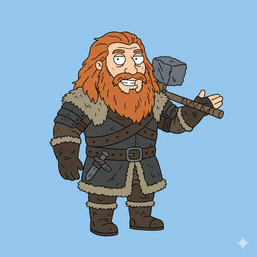

Tormag Bramaberg
Historia
Tormag Bramaberg nació en el salvaje norte, lejos de las ciudades y castillos de Throonia. Criado entre montañas y bosques, aprendió a sobrevivir en condiciones extremas y a enfrentarse a gigantes que aterrorizaban a los clanes locales. Su fama como “el Matagigantes” se extendió rápidamente por los territorios del norte y más allá, convirtiéndolo en una leyenda viva. Su vida ha sido una combinación de aventura, ferocidad y un profundo respeto por la naturaleza que lo rodea.
A pesar de su brutalidad, Tormag es un aliado leal y un estratega en la guerra, capaz de guiar ejércitos en el terreno más inhóspito. Su lealtad hacia aquellos que considera dignos es absoluta, y su fuerza y conocimiento del terreno lo hacen indispensable para cualquier alianza que busque sobrevivir en Throonia. Su historia es un testimonio de la supervivencia y la tenacidad en un mundo donde solo los más audaces prosperan.
Casa y relaciones
Casa: Clan Bramaberg.
Familia: Miembros del clan, todos guerreros formidables.
Aliados: Clanes del norte, mercenarios y guerreros libres que respetan su fuerza.
Enemigos: Blackmaw, Targheris y cualquier fuerza que amenace los territorios del norte.
Habilidades y personalidad
Furia salvaje - Mata gigantes - Maestro de guerra.
Personalidad audaz, intrépida y leal, con un profundo respeto por la fuerza y la supervivencia.